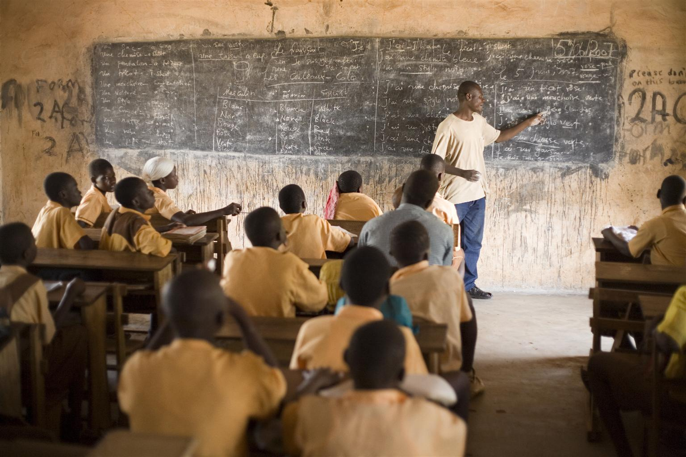
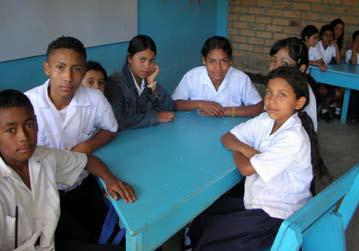

Education Across the World: A Declaration of Rights
Sahil Sharma
World History Honors
31st May 2022
Most of us would agree that education is something incredibly important and intrinsic to human well being and success. Ask yourself, would you be where you are today, if you weren’t educated at an early age?
Image
Credit iStock
Foreword
Both in the developed and developing countries, educational inequality, the unequal access to education, is rampant and has extremely negative effects. The Human Journey, by the Institute For Study of the Human Knowledge, reports that a few wealthy individuals have the same wealth as the 3.6 billion poorest. This income inequality transforms itself into educational inequality.
In India, the majority of teenagers cannot graduate from high school, reports the International Conference Equitable. In Africa and Latin America, funding for schools continues to be cut. Schools are distributed unequally. In China, only those who can afford private tutoring have the chance to perform well on standardized tests and make their way to a successful and wealthy life. And finally in America, because of the local funding, schools in poorer districts, with higher minority populations, receive lower funding.
Below are a list of rights that attempt to correct the issues in education we see around the world.
Declaration of Rights for Students Internationally
All students have the right to free education, from the ages of 4 (preschool) to 18 (final year).
Schools must be distributed equally, regardless of the city they are in.
Schools must be funded equally and federally.
Funding for schools should be obtained from taxation of the wealthy
Private schools, which charge tuition fees, are forbidden
Private after-school tutoring, which charges tuition, is forbidden
All teachers must be trained and accredited. If a lack of teachers is an issue, the government must put forth its best effort to recruit talent, cutting funding from other projects if required.
All pupils in all schools will be subject to annual standardized exams. If a certain bar is not yet, the school will be subject to additional review and increased funding for more resources
The curriculum within all schools must be standardized and must meet certain nationwide educational standards, that are on-par to other first-world countries
Explanation
Of course, such extreme measures warrant explanation. Some of the rights are easy to understand, such as the first right.
Right 2: Schools must be distributed equally. If a school, for example, is located 30 miles from a child’s home, it is not feasible for them to commute there everyday. This reduces their accessibility to education. The United Nations reports this as a large issue in Africa, where facilities are not distributed equally (or at least, somewhat equally) amongst communities.
Left: A school in Africa lacking amenities, credit UNICEF
Right 3: In America particularly, schools are funded locally by property taxes. This inherently causes problems when schools in wealthier areas receive more funding. Federally and equally funding schools eliminates this issue. Lindsey Cook from US News reports that this unequal funding results in racial segregation in the school system, where minorities are more likely to attend poorly
funded schools.
Right 4: As previously mentioned, the 3.6 billion poorest individuals in the world have the same wealth as few select wealthy individuals (Human Journey, part of the Institute For Study Of Human Knowledge). Taxing the rich, who already have such a large abundance of funds, could help fund public schools without cutting funding from other areas.
Right 5: If the wealthy have the option to send their children to private schools, they will not be concerned with the performance of public schools and will direct their funds towards private schools. If the wealthy are forced to send their children to public schools, they too will be concerned about whether public schools are teaching properly and performing well – meaning that the issue of poor quality education is more likely to become noticed.
Below: Image credit NestApple
Right
6: Private
after-school tutoring is inequitable in that not everyone can afford
it. Wealthy children can use private after-school tutoring to get
ahead, leaving other students behind. By abolishing after-school
tutoring, parents of wealthy students will be forced to advocate for
a higher quality education system that is self-contained. China in
particular has already started doing this. Pressenza, from the
Independent Media Institute, reports that China has banned for-profit
tutoring, as they believe the profits the tutoring system makes off
pupils is unethical.
Right 7: In Latin America, a lack of trained teachers remains a problem. Without enough trained teachers, students simply cannot learn. In many countries, education is put on the backburner, while really it needs considerably more attention. FOCALPoint, an NGO, reports on this problem in Latin America, but similar trends can be seen in other developing countries. 
Rights 8 & 9: In China in particular, the Independent Media Institute reports that the country has a “two-track system,” in which a student can either receive free education from the state, and do poorly on standardized tests, or pay high fees to enroll in a private school. This system is evident across the world. Public schools need to deliver the same quality of instruction as private schools, and this right endeavors to do so by forcing free education to meet certain standards.
Students in a school in Latin America. Image credit FOCALPoint.
Works Cited
“Education in the Developing World.” The Human Journey, https://humanjourney.us/health-and-education-in-the-modern-world/education-in-the-developing-world/. Accessed 19 May 2022.
Editor, and EditorEditorial staff. “The Prevailing Inequality in India's Education.” The Prevailing Inequality in India’s Education, The International Conference Equitable: All for Education, 29 July 2021, https://afe.eef.or.th/inequality-india-education-eng/.
Musau, Zipporah. “Africa Grapples with Huge Disparities in Education | Africa Renewal.” Africa Renewal, United Nations, Dec. 2017, https://www.un.org/africarenewal/magazine/december-2017-march-2018/africa-grapples-huge-disparities-education.
Chak, Tings. “How China Is Addressing Education Inequality.” Pressenza, Independent Media Institute, 12 Nov. 2021, https://www.pressenza.com/2021/11/how-china-is-addressing-education-inequality/.
Goodspeed, Tamara Ortega. “Latin America's Education Challenges Call for Concrete Action.” FOCAL, FOCALPoint, June 2010, https://www.focal.ca/en/publications/focalpoint/258-june-2010-tamara-ortega-goodspeed.
“A Study of Educational Inequality in America: Race and Gender.” Around Robin, 19 Feb. 2021, https://www.aroundrobin.com/educational-inequality-in-america/. (US News source contained within)
Education Training in Europe: Inequality Remains a Challenge. European Commission, 9 Nov. 2017, https://ec.europa.eu/commission/presscorner/detail/en/IP_17_4261.